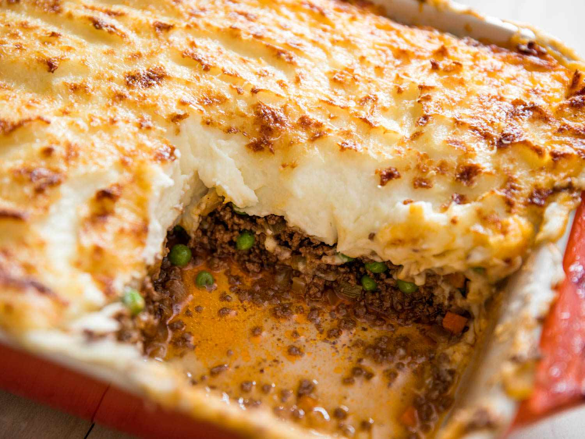

Shepherd's Pie

Shepherd's Pie
The perfect blend of meat, peas, and mashed potatoes scrumptiously delivered right to your
taste buds.
Ingredients
- 1 teaspoon salt, plus more to taste
- 3 large (1 1/2 to 2 pounds) potatoes, peeled and quartered
- 8 tablespoons (1 stick) butter, divided
- 1 medium onion, chpped (about 1 1/2 cups)
- 1 to 2 cups mixed vegetables, such as diced carrots, corn, or peas
- 1 1/2 pounds ground beef
- 1/2 cup beef broth
- 1 teaspoon Worcestershire sauce
- Pepper and/or other seasonings of choice
Instructions
- Boil the potatoes for about 20 minutes; add a teaspoon of salt
- Preheat oven to 400 degrees Fareinheit
- Saute the vegetables
- Add the ground beef, then add the Worcestershire sauce and broth
- Mash the cooked potatoes
- Layer the meat mixture and mashed potatoes in a casserole dish
- Bake in over for 30 minutes
- Enjoy!